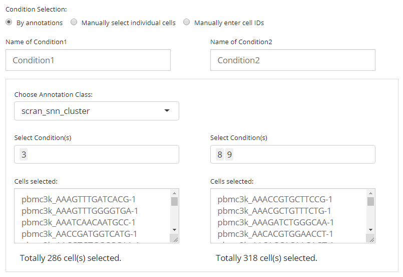
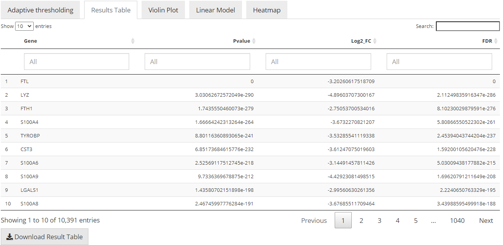
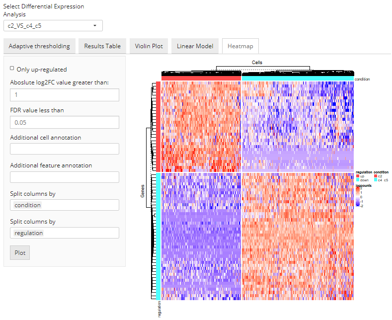

Differential Expression - UI
Yichen Wang
Source:vignettes/ui_differential_expression.Rmd
ui_differential_expression.RmdIntroduction
This section describes the usage of the user interface (UI) for singleCellTK (SCTK) differential expression (DE) analysis workflow. The underneath process is wrapped by R function runDEAnalysis(). For the help of R console workflow, also refer to the help page for R console.
UI Layout
Entry of The Panel
From anywhere of the UI, the panel for DE can be accessed from the top navigation panel at the circled tab shown below.

The UI is constructed with mainly four parts: 1. Assay input; 2. Condition selection; 3. Parameter settings; 4. Result and other visualization.
Assay Input
A SingleCellExperiment (SCE) object, which stores all the expression, reduction, and metadata, is active behind the interface. The assay needed here is a matrix that contains the expression information for all cells and all features (genes), and is saved in the assay slot of the SCE object. The selection for this should be made at the top of the panel, as shown in the screenshot below.

Condition Selection
Usually in terms of a DE analysis, we have two necessary conditions that have to be defined. One is the condition of interests and the other one is the condition of control. The condition of interests will then be compared to the condition of control via computational methods and statistical result will then be returned. The selection for a condition here means deciding which cells should be grouped together as one condition.
SCTK provides reasonably flexible approaches to setting the conditions:
- Select cells by categorical annotations stored in background (the
colDataof SCE object). - Select cells by filtering multiple classes of annotations in data tables.
- Select cells by pasting the cell identifiers directly into text boxes.
NOTE that the “Name of Condition” fields, which will be shown later, are always required, though default text is placed. It is highly recommanded that users put easily understandable namings there, in order to avoid the confusion when multiple batches of analysis are performed, and to keep the automatic legends on DE specific plottings clean as well.
Categorical Selection
The first approach is designed for the fastest use, where conditions of interests and of control can be simply defined by categorical variables of the same class in the cell annotation (i.e. within one single column in colData of the background SCE object).

First, users need to choose one single option from the selection list “Choose Annotation Class”. Then, in the UI, there will be two columns for each condition. For each of them, users can make selections for which categories should belong to the condition, at the selection input “Select Condition(s)”. One or more selections are acceptable. When selections are made for one condition while no selection for the other, all the categories but those already used for the former will go to the latter. The text boxes, “Cells selected”, are only for showing users what are selected. While the text span below the boxes summaries the total number of cells selected.
TODO check if text box actually is editable
In the example in the figure shown above, we intend to define the conditions based on the clustering result generated by Seurat’s louvain clustering, with resolution 0.8, "Seurat_louvain_Resolution0.8". Then we define that the cells assigned to “cluster 2” are of our interests, while the cells assigned to both “cluster 4” and “cluster 5” should be a control against “cluster 2”. (Same as the example in the R console tutorial for DE)
Data Table Firtering Selection
The second approach allows users to make the most use of all the cell annotations available. Meanwhile, single selection on each cell is also enabled to ensure the highest flexibility, though can be relatively ineffective.

In this approach, we utilize a data table, where filters can be applied, for the flexible definition on each condition. By default, all classes of annotations are displayed. In the selection input “Columns to display”, users can select one or more classes annotations, which should be displayed and used for filtering. The blank box under each column title is where the filters are applied. For categorical columns, one or more selections on available variables can be made; for numeric columns (with continuous values), value range can be set. All filters applied are not technically making any selection on cells, but adjusting which cells to display in the table. This can be inferred from the first text span summary below the table area. After users applied all necessary filters, click on “Add all filtered” button below the table area to technically make the selection. Meanwhile, Each row in the table is clickable to make a single selection/cancellation on cells. The advantage of the approach is that conditions defined by necessarily multiple classes of annotations can be fulfilled.
Similarly as the first approach, in the figure, we are making an equivalent condition definition.
Select by Pasting a list
The final way allows users without any useful annotation but still know which cells are interesting to perform the analysis. It is just by easily pasting a list of cell identifiers into the text box for each condition. Note that the cell identifiers used must be the default cell IDs in the background SCE object (i.e. colnames). The input text should be formatted by one ID per line, splitted with no symbol. A summary text span below each text box will be dynamically updated after pasting, for the number of valid IDs found in the input.

Other Parameters

- Method. At the selection input “Choose analysis method”, where “MAST”, “DESeq2”, “Limma” and “ANOVA” are available. Note that these method requires different types of input assay, so please pay attention to the red notification.
- FDR cutoff. At the numeric input “Output FDR less than”. As the label indicates, the cutoff set here will rule out DE genes with FDR (false discovery rate) value more than the cutoff from the result.
- Log2FC cutoff. At the numeric input “Output Log2FC Absolute value greater than”. As the label indicates, the cutoff set here will rule out DE genes with absolute value of Log2FC (logged fold change) smaller than the cutoff from the result.
- Whether only up-regulation. At the checkbox input “Only up-regulated genes”. By checking this option, only DE genes with positive log2FC value will remain in the result. And in the DE analysis within SCTK, “up-regulation” will always mean a positive log2FC tested from the condition of interests against the condition of control.
-
Covariate. At the selection input “Select Covariates”. A covariate is another set of categorization on the cells involved in the analysis, used for modeling. In the UI, we only allow setting the covariates by using the cell annotations saved in background (i.e.
colDataof the SCE object). Multiple selections are acceptable. - Name of an analysis. At the text input “Name of Differential Expression Analysis:”. This is a required field for all DE analysis. Similarly to the naming of each condition, when performing batches of analysis, users will need unique identifiers to recognize each set of result, and to avoid confusion in downstream analysis.
Result Visualization
Gene Table

In this tab, there will be a table with all the genes that are thought to be differentially expressed in the condition of interest against the condition of control, with high significance and passed all filter parameters. The gene names (default identifier in the background object, not necessarily a gene symbol), p-values, log2FC values, and FDR values will be present. The table will be saved in background by the name of the analysis, entered before running. Users can also download the table in comma-splitted value (CSV) format, by clicking “Download Result Table” button.
Heatmap

This tab enables a limited heatmap visualization for the DE analysis selected. Here SCTK will automatically group the cells to the two conditions where they are assigned to, and group the genes by the log2FC values, which indicate whether a gene is up-regulated or down-regulated.
- Further filtering by the statistics can be applied through numeric inputs “Absolute log2FC value greater than” and “FDR value less than”.
- Additional labeling can be added from background by multi-selection inputs “Additional cell annotation” and “Additional feature annotation”.
- The heatmap is by default splitted by the grouping “condition” and “regulation”, mentioned above. And this can only be achieved by selecting these two option in the multi-selection inputs “Split columns by” and “Split rows by”, respectively. Technically, these options can be canceled while other options can also be added, as long as users wish.
Furthermore, if more sophisticated settings on the DE heatmap are needed, users can move to the generic heatmap viewer and make use of the “import from analysis” functionality.